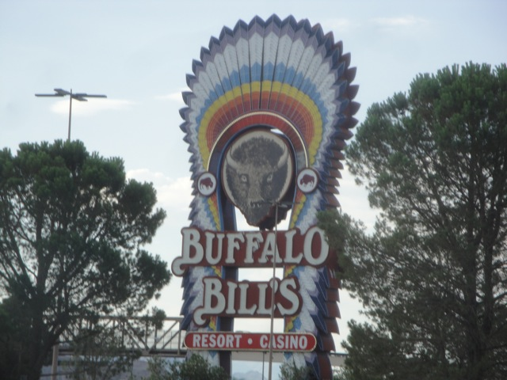
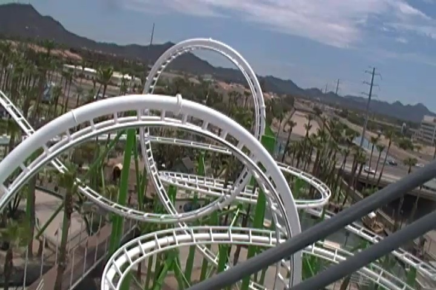
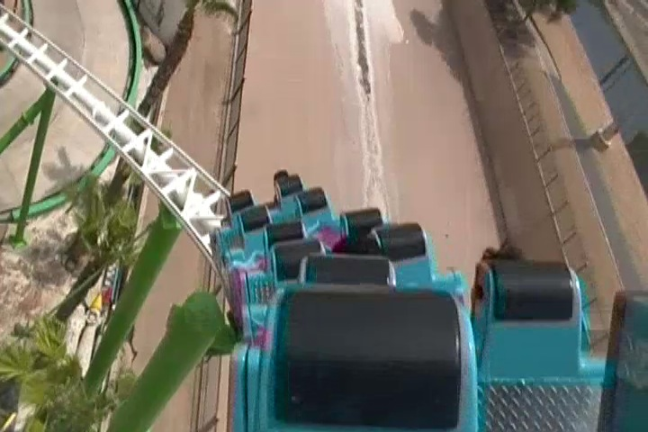
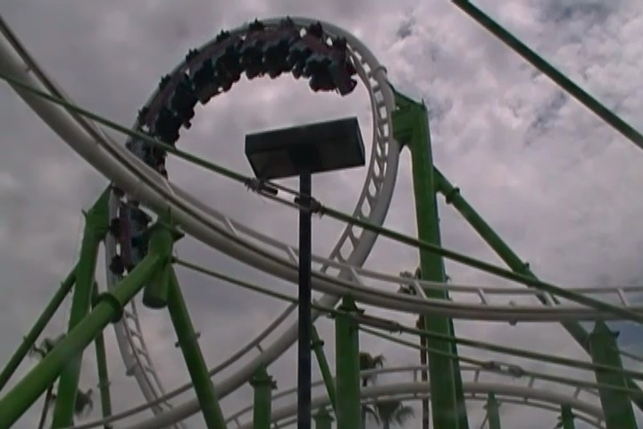
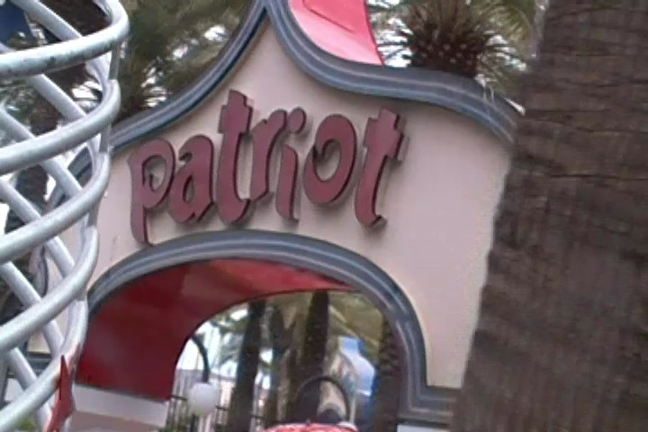
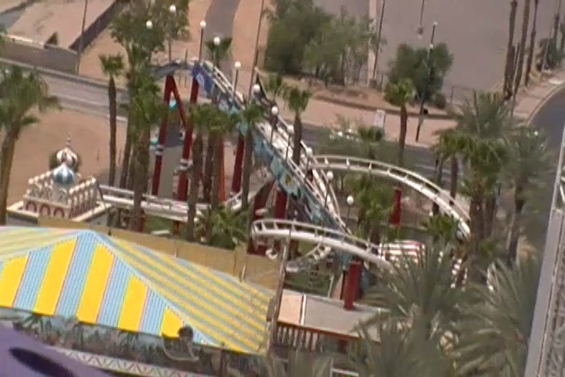

| |
Texas/Rocky Mtn Road Trip
Las Vegas/Castles'N'Coasters
Six Flags Fiesta Texas
Schlitterbahn Sea World San Antonio Gavelston Pier
Six Flags Over Texas Silver Dollar City Frontier City Colorado Elitch Gardens Lakeside Park Glenwood Springs
Well, the time has finally come!!! The time for the Texas/Rocky Mtn Road Trip has finally arrived. Now we have done some big trips with groups like Thrill Coaster Tours and Theme Park Review, doing amazing trips like North of the Border, Middle America, Northeast, and the crown jewel of all trips I've done, the Mega Europe Trip. But lately, we've been doing solo Incrediblecoasters Road Trips such as the Glass Beach Road Trip and the Lagoon Road Trip. And with the major successes of those trips, we decided to do a road trip that was essentially bat-sh*t crazy and on steroids. And since the idea of doing a road trip out to Texas has been a thought I'd had all the way back in 2008, and with all the new stuff coming to Texas this year, and it being a part of the country I had never visited before, I knew that this was the year to do it. So we packed up our car and drove half-way across the country. Yeah, we're f*cking insane.
 Umm yeah. This would be CRUCIAL to the trip.
Umm yeah. This would be CRUCIAL to the trip.
GRR!!!! F*cking Vegas Traffic!!!
I think we now have to officially make it a tradition to stop at the Barstow Train Station on all our road trips involving the 15 Freeway.
Sweet!!! They have Rocket Fizz drinks here!!! =)

All right. First stop of the trip, Buffallo Bills.
 All right. It wouldn't be an Incrediblecoasters Road Trip without some roller coasters, so lets bring on the first coaster of the trip.
All right. It wouldn't be an Incrediblecoasters Road Trip without some roller coasters, so lets bring on the first coaster of the trip.
 I gotta admit. Desperado was MUCH better than I remembered it to be. Then again, it was 9 years ago that I last rode it, so I barely remembered it to begin with. =)
I gotta admit. Desperado was MUCH better than I remembered it to be. Then again, it was 9 years ago that I last rode it, so I barely remembered it to begin with. =)
Yep, we're back in Las Vegas. Cody's favorite place in the world.
 Uh oh. This does not look like a good sign.
Uh oh. This does not look like a good sign.
 Yep. We're gonna do the Togo Death Machine tonight.
Yep. We're gonna do the Togo Death Machine tonight.
 "Wait a minute, I have this credit. Why the hell am I doing this?"
"Wait a minute, I have this credit. Why the hell am I doing this?"
 Yeah. This ride sucks major donkey balls.
Yeah. This ride sucks major donkey balls.
The really depressing and frustrating thing about Manhatten Express is that this could be a really awesome ride. Its got a good layout, if they ran it with just lap bars, I'd find it to be great. Or hell, even regular OTSRs would make it somewhat tolerable as the ride really isn't too rough. The problem with the roughness of the ride is that the rides restraints are right against your neck, and so instead of headbanging, you get neckbanging, which is MUCH more painful than headbanging. Because lets face it. Your neck is much more sensitive than your head cause you know, you've got a freaking hard skull to protect you in your head. Its like the ride keeps karate-chopping your neck. Please fix this as its a good ride. Its just got HORRIBLE restraints that cause SERIOUS PAIN to your neck.
Anyone else want to stop at Little America tonight?
Hey Luxor Hotel, Remember when you did that stunt for Fear Factor where they had to slide down? Yeah, consider that to be a good way to seperate me from my money.
 Menopause!!! The Musical!!! Because Seriously!!! What the flying f*ck!!!?
Menopause!!! The Musical!!! Because Seriously!!! What the flying f*ck!!!?
All right. We are here at the South Point Hotel and Casino...
For Penn's Bacon and Doughnut Party. Yep, this is why we came to Las Vegas.
They also had TAM at the South Point Hotel right before. Hmm, should've gone to TAM as well. Oh well.
What can I say? I'm a big Penn's Sunday School fan (and a big Bullsh*t fan as well). =)
Looks like I'm not the only one interested in all the free bacon and doughnuts.
"THIS PARTY IS AWESOME!!!! I SAW PENN JILLETTE AND I GOT ALL THIS BACON AND DOUGHNUTS!!!! I CAN'T WAIT FOR THE NO GOD BAND TO START PLAYING!!!!!" *falls asleep immedietly in the car*
Sweet!!!! The No-God Band is out!!! Now we'll really have some fun!!! =)
The party was a blast!!! While the music wasn't amazing or anything, it was just a ton of fun. I even got one of their songs, "F*ck You!!! You're an Atheist!!!". =)
Let's see. We've got bacon, doughnuts, and music. What more do we possibly need to add to improve this? I know!!! STRIPPERS!!!!
 Well I must say. The Penn Party was incredible and Penn is a badass. Thank you for proving to me why I am glad to be listening to Penn's Sunday School every week.
Well I must say. The Penn Party was incredible and Penn is a badass. Thank you for proving to me why I am glad to be listening to Penn's Sunday School every week.
All right. With the Penn Party ending at 2:00 AM, we drove into the night, and at sunrise, we were at this beautiful little town built into the mountainside called Jerome, AZ.
We decided to spend some time in Arizona away from coasters, so we checked out Montezumas Castle.

Enough with the pretty non-coaster stuff. We need more credit whoring!!! So its off to Castles'N'Coasters, which I swear to god, is just Golf'N'Stuff with some extra rides. Its literally JUST LIKE Golf'N'Stuff.
 All right. Time to ride this thing.
All right. Time to ride this thing.

I gotta admit. Desert Storm is a very...interesting ride.

Its got some of the strangest loops ever. I mean, you get LATERALS in the loop.
 Do these loops even look natural to you?
Do these loops even look natural to you?

Oh yeah. There's another credit here for me to get.

Oh joy. Its a knock-off Roller Skater. This should be interesting.
Well the entire lifthill has these murals. Classy.
 I gotta admit. For a kiddy coaster, this was a forceful and violent ride. I'd actually ride it again (if I ever get back to Castles'N'Coasters).
I gotta admit. For a kiddy coaster, this was a forceful and violent ride. I'd actually ride it again (if I ever get back to Castles'N'Coasters).
And now we're onto our Monster drive from Phoinex, AZ to San Antonio, TX. This should be interesting. Oh, and you're seeing it correctly. Gas is $3.19 here. THAT'S ALMOST A FULL DOLLAR CHEAPER THAN IN CALIFORNIA!!!! What the hell is wrong with our state!!?
Six Flags Fiesta Texas
Home
|